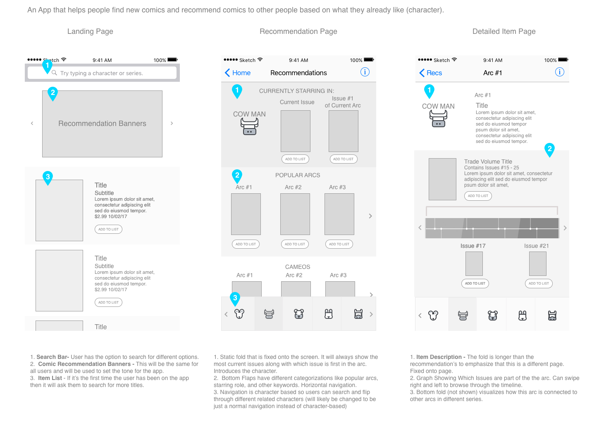
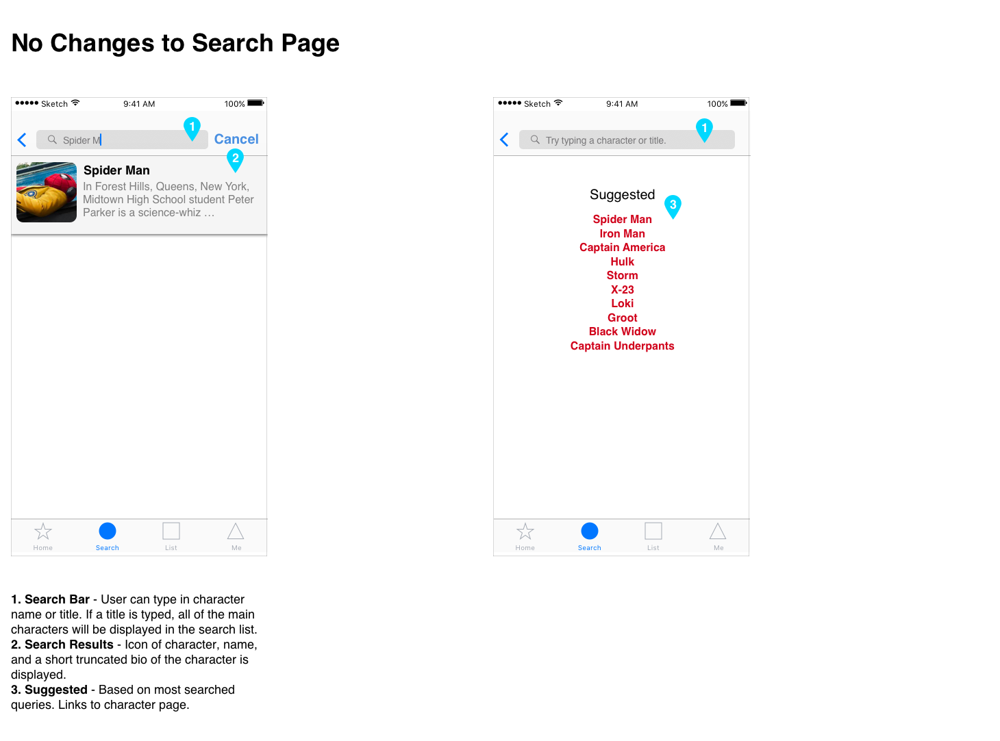
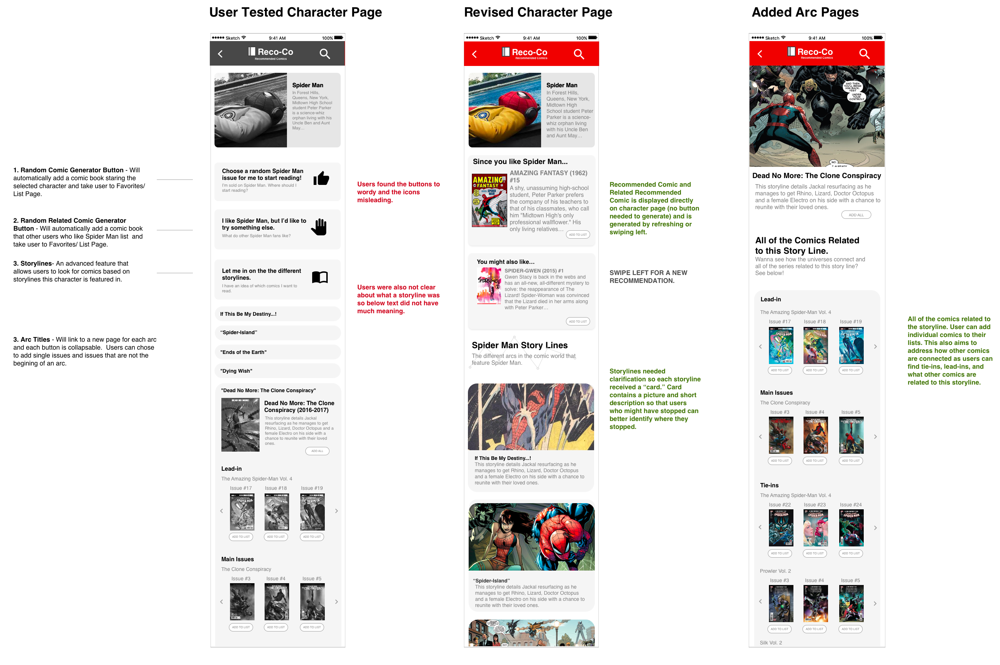

Reco-co - A Comic Recommendation App
Background
This project began in the realm of books and aimed to find out what pain points there might be for users who had favorite authors and books and found it hard to keep track. From interviews, I discovered that there weren't really any pain points in keeping track of books and many users didn't really find a need.
However there was one group that did track releases on a weekly basis - comic book readers. From interviews their issues were not in tracking releases, but keeping up with the story in book or just knowing how to begin. A user could easily add and track releases, but this would not necessarily solve their main goal for reading comics: to read comics s/he enjoys!
However there was one group that did track releases on a weekly basis - comic book readers. From interviews their issues were not in tracking releases, but keeping up with the story in book or just knowing how to begin. A user could easily add and track releases, but this would not necessarily solve their main goal for reading comics: to read comics s/he enjoys!
Insights from User Interviews
Book Readers Don't Really Need to Track Releases
I first interviewed 4 users who read books to get their insights and find out why they ready books.
- Contrary to what I thought, a lot of people aren’t as interested in keeping track of authors or books.
- However, this might be due to the nature of a bookstore because of the book landscape (books are generally cheaper online so people who go to book stores are usually there to look for an in-person recommendation or to support local bookstores. If you know what you want you would just automatically order it online to be shipped to you).
- Many of the books that authors release aren’t in series so it does not require the reader to read the book in sequential order or to read all of the books by an author.
- Many bookstores are ordered based by genre.
- New releases typically are featured in the front of stores. Popular releases are usually featured in the new release section in multiple stores in the area.
- It seems like most of the ways to keep track of releases are digitally through email updates or reading social media or blog posts about new books.
Comic book readers track releases, but tracking doesn't necessarily make reading comic books easier.
I interviewed 4 more potential users of the app. These were frequenters of a local comic book store and below is a summary of some of their issues. Most of these issues affect newbies or people just starting to get into comics or people who stopped reading and have to catch up. Some of the points:
- One user got into comics from the Green Lantern movie which spured him into reading more comics with Hal Jordan and launched him into reading other DC Comics.
- He said he likes comics because of the story telling and the characters.
- He had a problem finding out about what comics to read first because there was such a big body of work.
- He found recommendations by asking people in store and from online.
- Says it’s expensive. If he really likes a series he’ll get it in trade.
The issue is trying to find comics you want to read.
- He had a problem finding out about what comics to read first because there was such a big body of work. He found recommendations by asking people in store and from online.
- When you’re just starting out there’s a tendency of people who have read further ahead than you to spoil parts of the story line.
- Should I start with past issues and the classic comic book story lines or start with the current story line?
- You see a lot of books but you’re not sure what you might like or not.
- Learning about options
- What are issues and what are trades?
- Learning about digital option (comixology).
- A lot of comic book fans prefer stories that aren’t really easy for newbs.
- The volume/issue numberings can be confusing and it can be hard to track what exactly you’re looking for.
- Crossovers between comics/universes can be confusing.
Persona Based on Research - The Guy who wants to Read Comics

User Goals for App
- Enjoy comics
- Spend less time finding comics, more time reading comics.
- To easily find comics he likes without having to read 50 comics he doesn't like first.
- Gain a better understanding of how different comic books are connected to one another.
- Be able to dive into the fandom head first.
Competitive Analysis
Comic Book Stores
Currently existing app where users can create online pull lists.
- Store Clerks can recommend comics, but is biased towards their taste/ knowledge.
- Can create a pull-list (a list of book titles you provide to the book clerk) (like pre-ordering a book/ subscription service).
- You get an email notification and will be able to pick up the books after they are released.
- Also helpful for bookstore to know what they should keep in stock and what not.
Currently existing app where users can create online pull lists.
- This app is created mainly for Comic Book fans apparently by comic book fans.
- It is generally sorted based on publisher and fans can create their own pull list.
- It requires the user to have a general idea about what comics they like since you search by publisher or by week. You can also se
Early Wireframes + Rapid User Testing
The first initial user test aimed to see how a user would react to a screen and how he would navigate without any prompting. He was not told this was an app for comics or if or how these screens are connected and was only presented with these screens. For all of the designs, the user mentioned he wanted to click on a picture. These wireframes are three different possible designs for the recommendation page(home page).
What do you expect to see after you click and what task do you think you can complete on this page?
Design 1:
What do you expect to see after you click and what task do you think you can complete on this page?
Design 1:
- When clicked, he imagined the picture clicked would zoom in and “Like a whole new page where you scroll down and there’s more info” would appear.
- Pick a movie to watch (purchase/ rent)
- He doesn’t really know what would come up for the second one because all of the information he needs is there. He guesses if it was a list of things to buy, it would be added to his cart for check out.
- Pick a movie to watch (purchase/ rent)
- Just wanted to click the cow to see if something would happen. He guesses it would take him back to see a root menu if he clicked the cow.
- Pick a book to read.
- Likes the third one because it seems like he can side scroll and because there are different sections.
- Keywords thing (design 2) takes a lot of space. He doesn’t find it helpful.
Revised Wireframes
Revised wireframes decided to use scrolling and work on a more picture focused app as that what the user was most attracted. (Animals are a place holder for comic heroes.)

Hi-Fidelity Prototype + User-Testing
Users were given a series of four tasks that took them through the journey of being someone who just needs a starting point to becoming a more intermediate fan who need needs more advanced features. Each iteration of the test aims to see if the app will answer the pain points found from the earlier issues.
Design-wise, this iteration maintains the same swipe feel, but follows standard navigation for iphones more closely.
Design-wise, this iteration maintains the same swipe feel, but follows standard navigation for iphones more closely.
Does this solve the pain point of finding a starting point?
The first test situation was designed to check the flow of the app. It was important to know where the user would first click to start. The entry point into the app is through searching for a character. The remaining test situations tested out different features of the app (removing an app, finding more recommendations, finding related comics in the more advanced features).
Example Situation
You just watched the new Spider Man movie and want to start reading the comics, but you haven’t read any comics before and you’re not sure where to start. You heard about an app called Reco-Co and decide to use it find a Spider Man comic to purchase.
Testing for:
Example Situation
You just watched the new Spider Man movie and want to start reading the comics, but you haven’t read any comics before and you’re not sure where to start. You heard about an app called Reco-Co and decide to use it find a Spider Man comic to purchase.
Testing for:
- How does the app flow?
- Is it easy to find one comic?
- Are there navigation issues?
- Users found it easy to find a single comic.
- It was difficult to access and find the information for more advanced users during the user testing because of comic-specific jargon. The user was unclear about what the task was asking.
- The text was lengthy (making it difficult to know what to do) and iconography was confusing.
- Text size was too small.
- It was confusing to know where you were in the app (navigation issues).
- The user thought explore would be more free form instead of being search (word usage)
The Solution + Revisions
A "Character-based" Approach:
- Entry point: Searching for a character s/he is interested in
- Improved ability to search
- Dropdown listing of all characters in database
- Simplified navigation options (instead of explore, search)
- Card-design for user to click on the image
Revisions to the Home Screen

- Users understood to swipe card to find specific character.
- Cards are limited (and change) so other than search there needed to be a feature on the home screen that would let the user known what options would always be available.
- Only the most necessary tab bars are included and have straightforward labels
Changes to Character Page

More Upfront about information.
- Directly recommends comics on the page
- More pictures/ less reading
Changes to Recommendation List
- Straight foward
- Automatically adds comic when you add to list
What is this app really?
This app is like training wheels for a comic book reader. It helps show the user how to navigate through the comic book world but gives them enough agency to make decisions about what they want to read. The user grows with the app as s/he becomes "more advanced in comics."
.